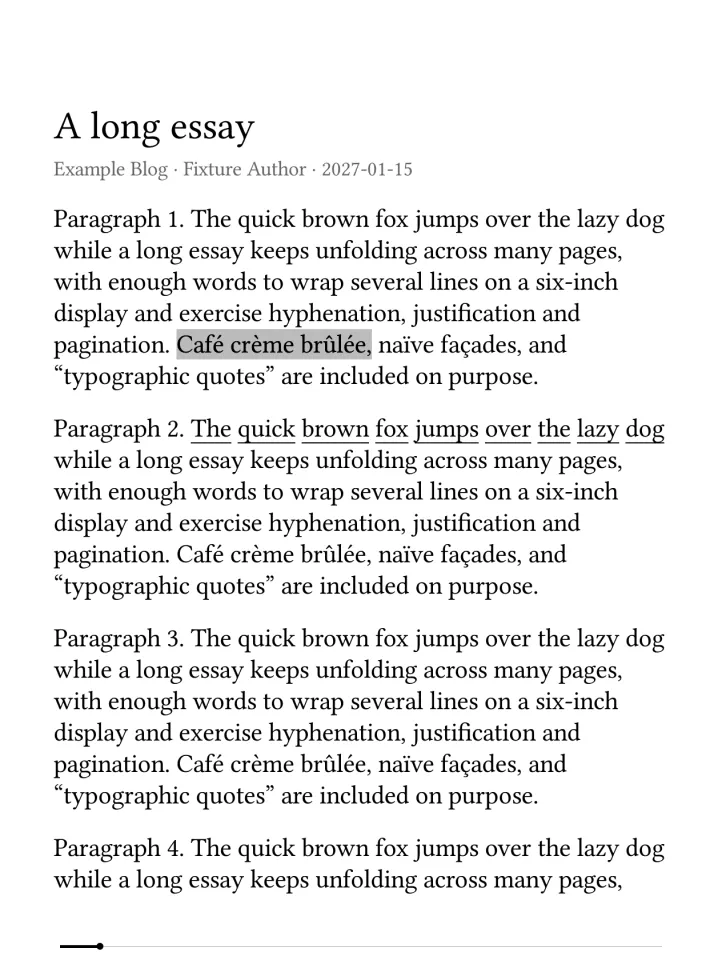
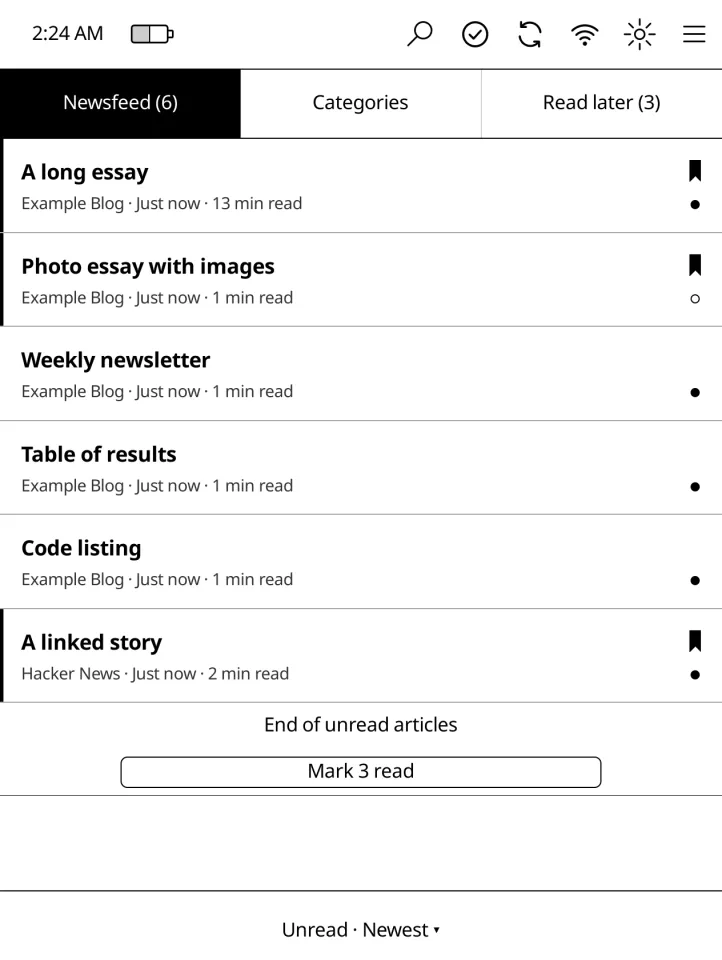
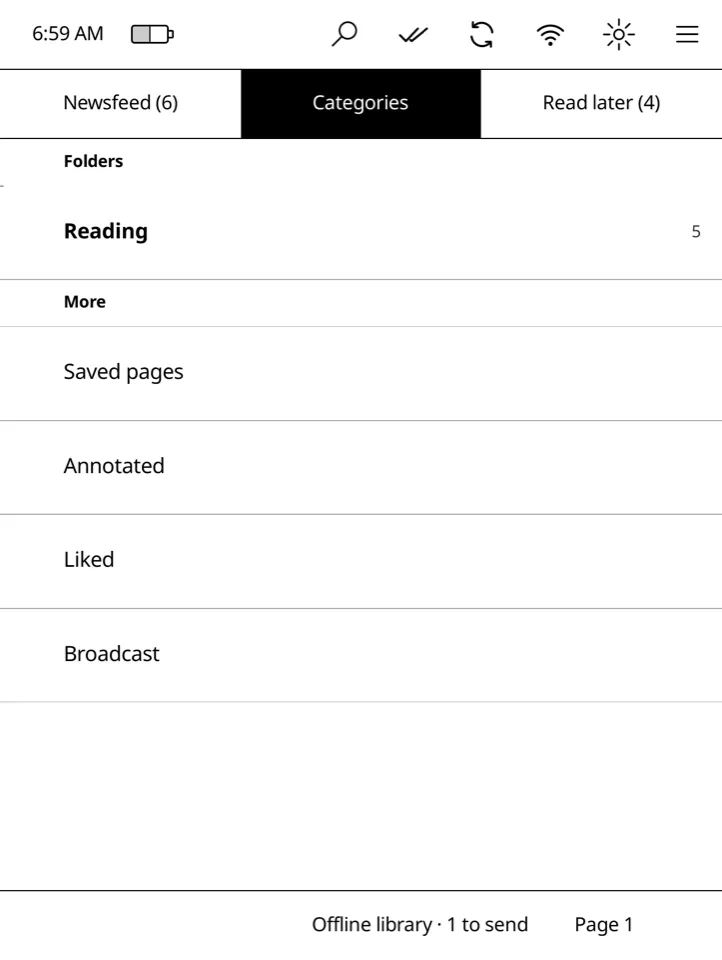
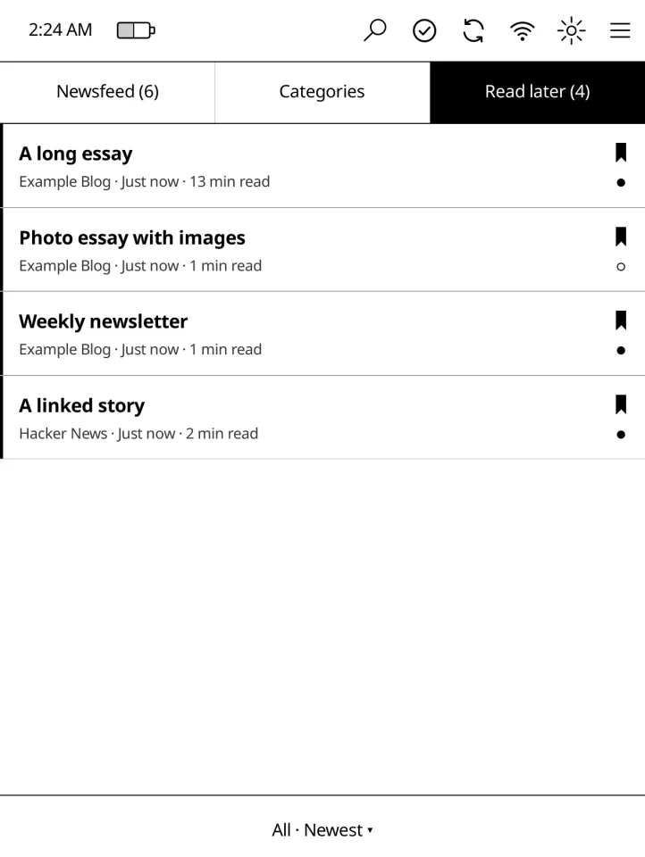
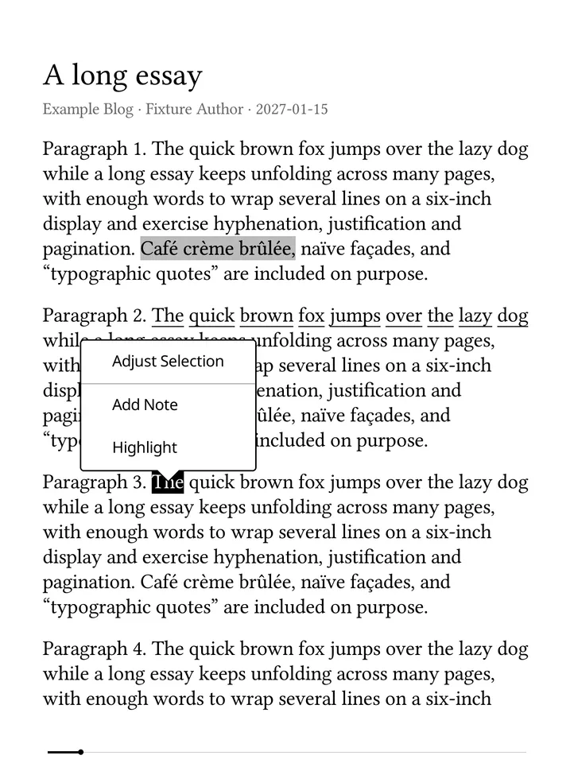
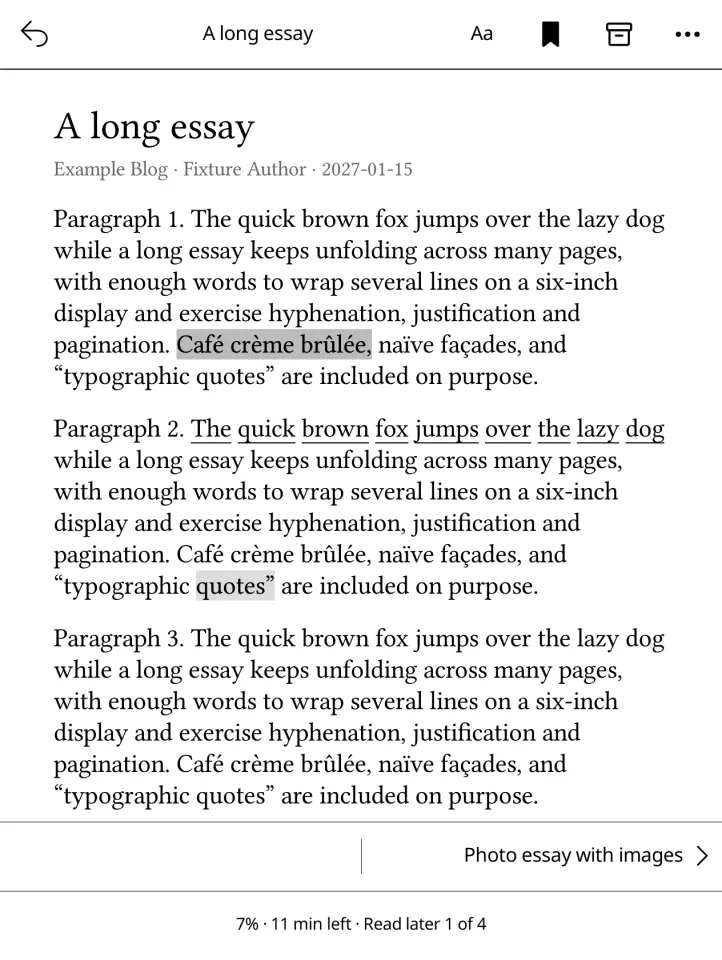
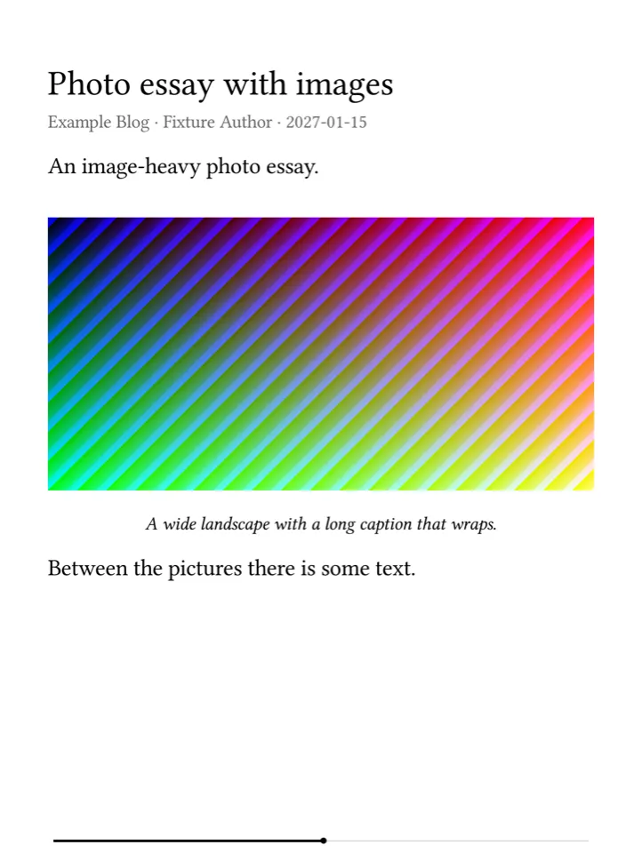
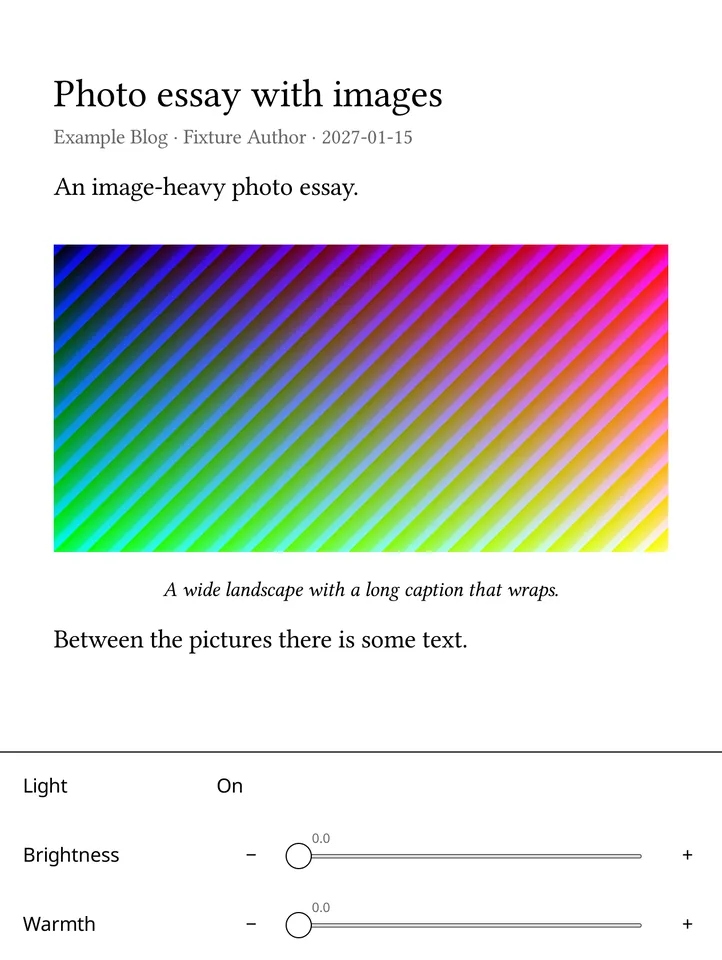

Newsfeed, Categories, Read later
The same three places you know from Inoreader. Tap a headline to read it, hold it to save it for later. Each view remembers its own filter, grouping and sort, and every list tells you how many pages it has.
InoInk turns a Kobo Libra Colour into a dedicated Inoreader reader. Skim the newsfeed, save what matters, and read it later in proper book typography, offline, away from the browser tabs.
Download the latest release Read the docs
Free and open source (AGPL). Unofficial: not affiliated with Inoreader or Rakuten Kobo.

The same three places you know from Inoreader. Tap a headline to read it, hold it to save it for later. Each view remembers its own filter, grouping and sort, and every list tells you how many pages it has.
Plato's typesetting with justification and hyphenation in the article's own language, curly quotes and proper dashes, and an Aa panel for font, size, spacing, margins and alignment. Page turns by tap, swipe or button, the title in the top margin, and a quiet bar that shows one segment per page when the article is short enough to count.
Hold a word to highlight it or add a note. Annotations you made in Inoreader show up underlined in the text. Export yours as Markdown or Readwise-ready JSON.
Text and colour images are cached on the Kobo. Every change is saved on the device first and sent to Inoreader when Wi-Fi is back. Nothing is lost when the network is not.
Swipe up for the next article in the list and down for the previous one, which reopens where you left it; the neighbours download while you read. Nothing is marked read until you say so. At the end of the newsfeed, mark everything you skimmed as read in one tap.
Feeds that send only a teaser open as the full article, and InoInk learns which feeds do. Hacker News and Lobsters posts open as the linked article, with the discussion one tap away. Tap any link for a clean reading view; hold it for a QR code to open on your phone.
InoInk talks to Inoreader's public API with your own app registration. No server, no browser extension, no read-later service in between. Your keys stay encrypted on the Kobo, and a sync with nothing new costs a single request; Settings shows today's budget.
Starts with the light and Wi-Fi you had, a bottom light panel and an edge slide for brightness, page-turn buttons, and the normal Kobo interface back when you quit.
Tags, likes, broadcast, following feeds, folder management, monitoring searches and Send to Karakeep, as far as Inoreader's public API allows.
Screenshots from InoInk's emulator at the Libra Colour's resolution, using its built-in sample articles.







read write).install-inoink.sh and inoink-cli from the
latest release.sh install-inoink.sh inoink-<version>-kobo.tar.gz /Volumes/KOBOeReader --menuinoink-cli authorize --device /Volumes/KOBOeReader ...The setup guide covers every step, updates and removal.